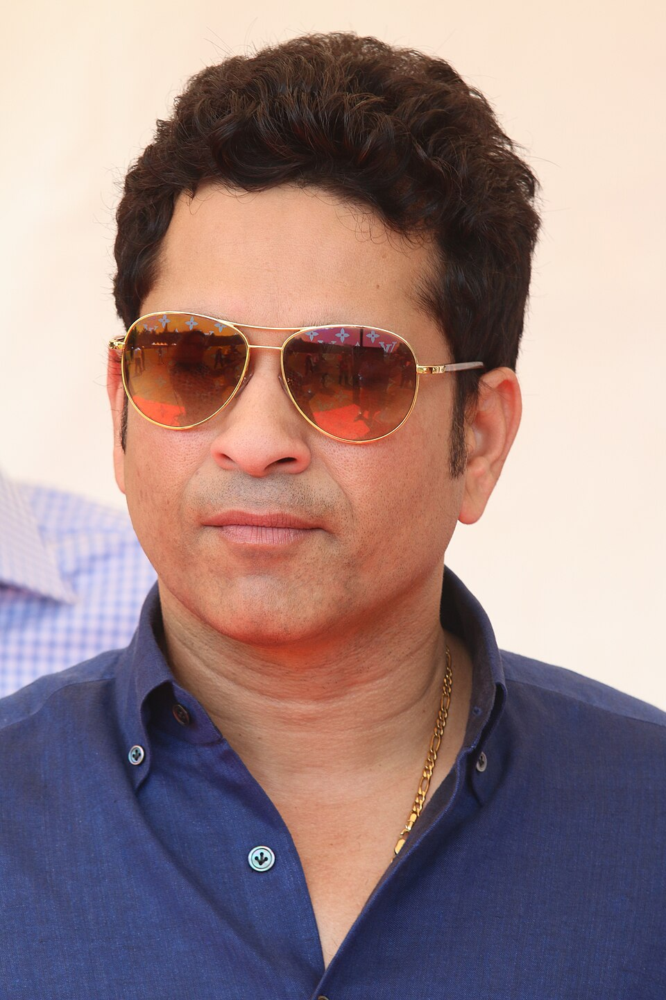

Sachin Tendulkar
24 April 1973
God Of Cricket
Sachin Ramesh Tendulkar born (24th April 1973), is an Indian former international cricketer who captained the Indian national team. He is widely regarded as one of the greatest cricketers of all time, and is the holder of several world records, including being the all-time highest run-scorer in both ODI and Test cricket, receiving the most player of the match awards in international cricket, and being the only batsman to score 100 international centuries. Tendulkar was a Member of Parliament, Rajya Sabha by presidential nomination from 2012 to 2018.
Biographies
- Tendulkar was introduced to cricket at the age of 11 and made his Test debut for India at the age of 16.
- He quickly established himself as a prolific scorer, known for his elegant stroke play and strong determination.
- His early years saw him achieve numerous milestones, including scoring a match-saving century against England at the age of 17.
- He became the youngest cricketer to score a century in Test matches.
- Tendulkar's career is marked by numerous records and achievements, including the most runs and centuries in both Test and ODI cricket.
- He was the first player to score a double century in ODIs.
- He was named the "Man of the Series" in the 2003 Cricket World Cup.